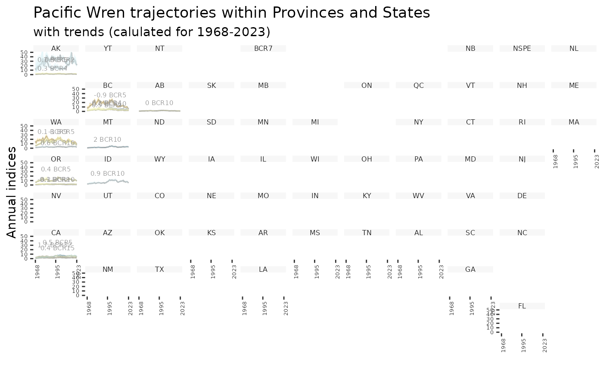
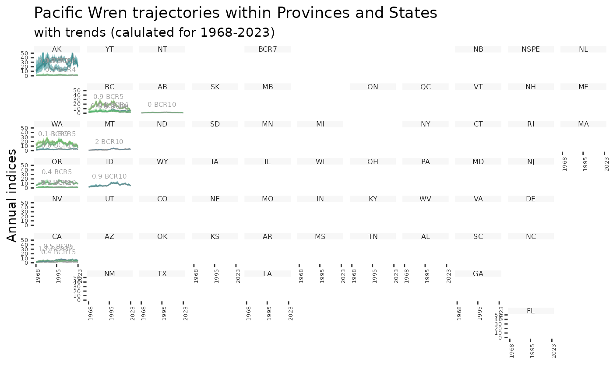
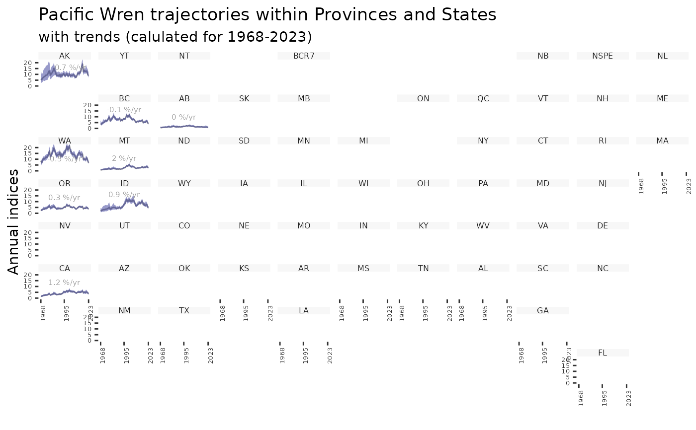
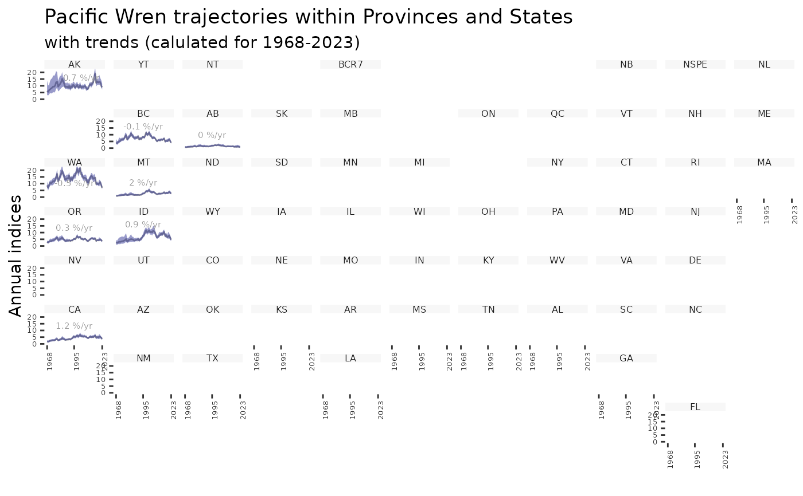

Create geofacet plot of population trajectories by province/state
Source:R/plot-geofacet.R
plot_geofacet.RdGenerate a faceted plot of population trajectories by province/state. Only
possible if indices created by generate_indices() include the prov_state
region. All geofacet plots have one facet per state/province, so if there are
multiple strata per facet, these can be plotted as separate trajectories
within each facet (multiple = TRUE).
Usage
plot_geofacet(
indices,
ci_width = 0.95,
multiple = FALSE,
trends = NULL,
slope = FALSE,
add_observed_means = FALSE,
col_viridis = FALSE
)Arguments
- indices
List. Indices generated by
generate_indices().- ci_width
Numeric. Quantile defining the width of the plotted credible interval. Defaults to 0.95 (lower = 0.025 and upper = 0.975). Note these quantiles need to have been precalculated in
generate_indices().- multiple
Logical. Whether to plot multiple strata-level trajectories within each prov/state facet. Default
FALSE.- trends
List. (Optional) Output generated by
generate_trends(). If included trajectories are coloured based on the same colour scale used inplot_map.- slope
Logical. If
trendsincluded, whether colours in the plot should be based on slope trends. DefaultFALSE.- add_observed_means
Logical. Whether to include points indicating the observed mean counts. Default
FALSE. Note: scale of observed means and annual indices may not match due to imbalanced sampling among routes.- col_viridis
Logical. Should the colour-blind-friendly "viridis" palette be used. Default
FALSE.
See also
Other indices and trends functions:
generate_indices(),
generate_trends(),
plot_indices(),
plot_map()
Examples
# Using the example model for Pacific Wrens...
# Generate indices
i <- generate_indices(pacific_wren_model,
regions = c("stratum", "prov_state"))
#> Processing region stratum
#> Processing region prov_state
# Generate trends
t <- generate_trends(i)
# Now make the geofacet plot.
plot_geofacet(i, trends = t, multiple = TRUE)

plot_geofacet(i, trends = t, multiple = TRUE, col_viridis = TRUE)

plot_geofacet(i, multiple = TRUE)
 plot_geofacet(i, trends = t, multiple = FALSE)

plot_geofacet(i, multiple = FALSE)
plot_geofacet(i, trends = t, multiple = FALSE)

plot_geofacet(i, multiple = FALSE)
 # With different ci_width, specify desired quantiles in indices
i <- generate_indices(pacific_wren_model,
regions = c("stratum", "prov_state"),
quantiles = c(0.005, 0.995))
#> Processing region stratum
#> Processing region prov_state
plot_geofacet(i, multiple = FALSE, ci_width = 0.99)
# With different ci_width, specify desired quantiles in indices
i <- generate_indices(pacific_wren_model,
regions = c("stratum", "prov_state"),
quantiles = c(0.005, 0.995))
#> Processing region stratum
#> Processing region prov_state
plot_geofacet(i, multiple = FALSE, ci_width = 0.99)